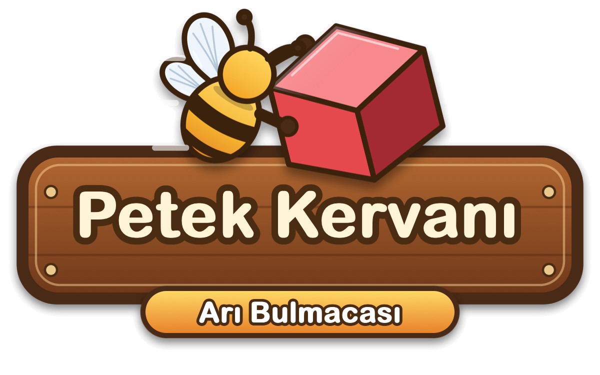

Arılar renkli kareleri piksel resimden söküp kovana taşıyor.
Yakında App Store'daHakkında

Petek Kervanı, bir piksel resmi arılarla dıştan içe söken bir bulmacadır. Kutu ızgarasından bir kutu seç, fırlatma yuvasına girsin; kutudaki arılar resmin kenarında dolaşıp kendi renklerindeki kareleri kovana taşısın.
Oyun şu an geliştirme aşamasındadır ve henüz App Store'da değildir.
Öne çıkanlar
- Kutu ızgarası ve 5 fırlatma yuvası: sırayı sen seçersin; yuvalar dolup hamle kalmazsa oyun kilitlenir
- Arılar resmin kenarında dolaşır, yalnız dışa açık kareleri alır: resim dıştan içe soyulur
- Bağlı, anahtar-kilitli ve gizli kutular her bölümü farklı kılar
- Jokerler: Ek Yuva, İki Kutu, Geri Çağır, Değiştir; jokersiz kazanırsan Saf Bal rozeti
- Tek sonsuz yol: 30 el yapımı bölümle başlar ve sınırsız sürer; zorlanırsan oyun otomatik kolaylaşır
- Bal Kavanozu: ilerledikçe dolar, joker teklifleri reklamsızdır
- iPhone ve iPad, Türkçe ve İngilizce
- Tamamen çevrimdışı, reklam yok, uygulama içi satın alma yok, hesap yok, kişisel veri toplanmaz
Ekran görüntüleri


Ekran görüntüleri Türkçe arayüzden.